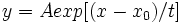

Schranken und Bedingungen können die Parameterwerte in einen bestimmten Bereich eingrenzen und verhindern so, dass die Parameter in falsche Parameterwertebereiche wandern. Im Modell exponentielles Wachstum zum Beispiel:

Ein Wert des Parameters t, der nahe an Null liegt, kann zu Instabilität führen. Eine Bedingung wie etwa t ≥ 0,1 kann dieses Problem verhindern.